Individual cell-based differential transcriptomic analysis across conditions#
[1]:
path = '/home/mid166/Analysis/Jupyter/Python/Package/PIASO_github'
import sys
sys.path.append(path)
import piaso ## Available in https://github.com/genecell/PIASO
[2]:
import scanpy as sc
[3]:
import pandas as pd
import numpy as np
[4]:
sc.set_figure_params(dpi=80,dpi_save=300, color_map='viridis',facecolor='white')
from matplotlib import rcParams
rcParams['figure.figsize'] = 4, 4
save_dir='/n/data1/hms/neurobio/fishell/mindai/Result/single-cell/Methods/Emergene'
sc.settings.figdir = save_dir
prefix='Emergene_Tutorial'
Load the data#
The 25k subsampled snRNA-seq data SEA-AD_CaseControl_subset_log1p_25k.h5ad from Allen SEA-AD project is available in google drive: https://drive.google.com/file/d/1YLdzJPFuKFrSYTc82bLMKmFGSZwsTAck.
The original data is available in https://portal.brain-map.org/explore/seattle-alzheimers-disease.
You can use gdrive to download the above dataset to your space:
mkdir -p /n/data1/hms/neurobio/fishell/mindai/Result/single-cell/Methods/Emergene/
cd /n/data1/hms/neurobio/fishell/mindai/Result/single-cell/Methods/Emergene/
gdrive files download 1YLdzJPFuKFrSYTc82bLMKmFGSZwsTAck
[5]:
adata=sc.read('/n/data1/hms/neurobio/fishell/mindai/Result/single-cell/Methods/Emergene/SEA-AD_CaseControl_subset_log1p_25k.h5ad')
[6]:
adata
[6]:
AnnData object with n_obs × n_vars = 25600 × 36601
obs: 'sample_id', 'Neurotypical reference', 'Donor ID', 'Organism', 'Brain Region', 'Sex', 'Gender', 'Age at Death', 'Race (choice=White)', 'Race (choice=Black/ African American)', 'Race (choice=Asian)', 'Race (choice=American Indian/ Alaska Native)', 'Race (choice=Native Hawaiian or Pacific Islander)', 'Race (choice=Unknown or unreported)', 'Race (choice=Other)', 'specify other race', 'Hispanic/Latino', 'Highest level of education', 'Years of education', 'PMI', 'Fresh Brain Weight', 'Brain pH', 'Overall AD neuropathological Change', 'Thal', 'Braak', 'CERAD score', 'Overall CAA Score', 'Highest Lewy Body Disease', 'Total Microinfarcts (not observed grossly)', 'Total microinfarcts in screening sections', 'Atherosclerosis', 'Arteriolosclerosis', 'LATE', 'Cognitive Status', 'Last CASI Score', 'Interval from last CASI in months', 'Last MMSE Score', 'Interval from last MMSE in months', 'Last MOCA Score', 'Interval from last MOCA in months', 'APOE Genotype', 'Primary Study Name', 'Secondary Study Name', 'NeuN positive fraction on FANS', 'RIN', 'cell_prep_type', 'facs_population_plan', 'rna_amplification', 'sample_name', 'sample_quantity_count', 'expc_cell_capture', 'method', 'pcr_cycles', 'percent_cdna_longer_than_400bp', 'rna_amplification_pass_fail', 'amplified_quantity_ng', 'load_name', 'library_prep', 'library_input_ng', 'r1_index', 'avg_size_bp', 'quantification_fmol', 'library_prep_pass_fail', 'exp_component_vendor_name', 'batch_vendor_name', 'experiment_component_failed', 'alignment', 'Genome', 'ar_id', 'bc', 'GEX_Estimated_number_of_cells', 'GEX_number_of_reads', 'GEX_sequencing_saturation', 'GEX_Mean_raw_reads_per_cell', 'GEX_Q30_bases_in_barcode', 'GEX_Q30_bases_in_read_2', 'GEX_Q30_bases_in_UMI', 'GEX_Percent_duplicates', 'GEX_Q30_bases_in_sample_index_i1', 'GEX_Q30_bases_in_sample_index_i2', 'GEX_Reads_with_TSO', 'GEX_Sequenced_read_pairs', 'GEX_Valid_UMIs', 'GEX_Valid_barcodes', 'GEX_Reads_mapped_to_genome', 'GEX_Reads_mapped_confidently_to_genome', 'GEX_Reads_mapped_confidently_to_intergenic_regions', 'GEX_Reads_mapped_confidently_to_intronic_regions', 'GEX_Reads_mapped_confidently_to_exonic_regions', 'GEX_Reads_mapped_confidently_to_transcriptome', 'GEX_Reads_mapped_antisense_to_gene', 'GEX_Fraction_of_transcriptomic_reads_in_cells', 'GEX_Total_genes_detected', 'GEX_Median_UMI_counts_per_cell', 'GEX_Median_genes_per_cell', 'Multiome_Feature_linkages_detected', 'Multiome_Linked_genes', 'Multiome_Linked_peaks', 'ATAC_Confidently_mapped_read_pairs', 'ATAC_Fraction_of_genome_in_peaks', 'ATAC_Fraction_of_high_quality_fragments_in_cells', 'ATAC_Fraction_of_high_quality_fragments_overlapping_TSS', 'ATAC_Fraction_of_high_quality_fragments_overlapping_peaks', 'ATAC_Fraction_of_transposition_events_in_peaks_in_cells', 'ATAC_Mean_raw_read_pairs_per_cell', 'ATAC_Median_high_quality_fragments_per_cell', 'ATAC_Non-nuclear_read_pairs', 'ATAC_Number_of_peaks', 'ATAC_Percent_duplicates', 'ATAC_Q30_bases_in_barcode', 'ATAC_Q30_bases_in_read_1', 'ATAC_Q30_bases_in_read_2', 'ATAC_Q30_bases_in_sample_index_i1', 'ATAC_Sequenced_read_pairs', 'ATAC_TSS_enrichment_score', 'ATAC_Unmapped_read_pairs', 'ATAC_Valid_barcodes', 'Number of mapped reads', 'Number of unmapped reads', 'Number of multimapped reads', 'Number of reads', 'Number of UMIs', 'Genes detected', 'Doublet score', 'Fraction mitochondrial UMIs', 'Used in analysis', 'Class confidence', 'Class', 'Subclass confidence', 'Subclass', 'Supertype confidence', 'Supertype (non-expanded)', 'Supertype', 'Continuous Pseudo-progression Score', 'Severely Affected Donor', 'Condition'
var: 'gene_ids'
uns: 'APOE4 Status_colors', 'Braak_colors', 'CERAD score_colors', 'Cognitive Status_colors', 'Condition_colors', 'Great Apes Metadata', 'Highest Lewy Body Disease_colors', 'LATE_colors', 'Overall AD neuropathological Change_colors', 'Sex_colors', 'Subclass_colors', 'Supertype_colors', 'Thal_colors', 'UW Clinical Metadata', 'X_normalization', 'batch_condition', 'default_embedding', 'neighbors', 'title', 'umap'
obsm: 'X_scVI', 'X_umap'
layers: 'UMIs', 'log1p'
obsp: 'connectivities', 'distances'
[7]:
pd.crosstab(adata.obs['Neurotypical reference'], adata.obs['CERAD score'])
[7]:
| CERAD score | Absent | Frequent |
|---|---|---|
| Neurotypical reference | ||
| False | 10264 | 15336 |
Check the cell type composition#
[8]:
sc.pl.embedding(adata,
basis='X_umap',
color=['Subclass'],
palette=piaso.pl.color.d_color3,
legend_fontoutline=2,
legend_fontweight=5,
cmap='Spectral_r',
ncols=3,
size=10,
frameon=False)
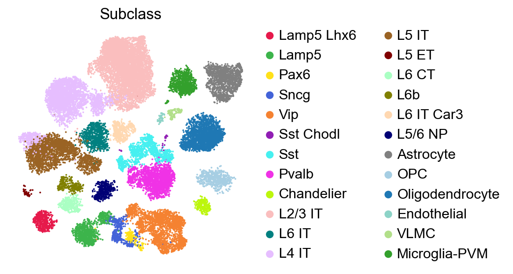
[9]:
sc.pl.embedding(adata,
basis='X_umap',
color=['Subclass'],
palette=piaso.pl.color.d_color3,
legend_fontoutline=2,
legend_fontsize=7,
legend_fontweight=5,
legend_loc='on data',
cmap='Spectral_r',
ncols=3,
size=10,
frameon=False)
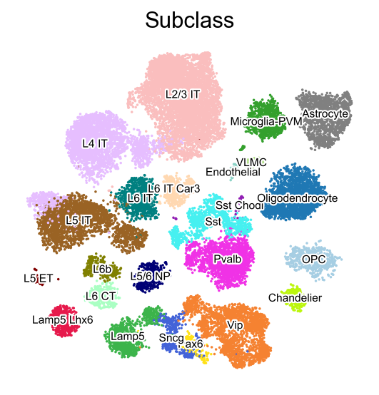
Run Emergene#
[75]:
path = '/home/mid166/Analysis/Jupyter/Python/Package/Emergene_github/emergene'
import sys
sys.path.append(path)
import emergene ## Available in https://github.com/genecell/Emergene
[76]:
import importlib
importlib.reload(emergene)
[76]:
<module 'emergene' from '/home/mid166/Analysis/Jupyter/Python/Package/Emergene_github/emergene/emergene.py'>
[91]:
%%time
emergene.infog(adata, layer='UMIs')
/home/mid166/Analysis/Jupyter/Python/Package/Emergene_github/emergene/emergene.py:1024: RuntimeWarning: divide by zero encountered in true_divide
info_factor=sparse.diags(counts_sum/cell_depth.ravel()) @ counts @ sparse.diags(1/gene_depth.ravel())
The normalized data is saved as `infog` in `adata.layers`.
The highly variable genes are saved as `highly_variable_infog` in `adata.obs`.
Finished INFOG normalization.
CPU times: user 10.9 s, sys: 10.8 s, total: 21.6 s
Wall time: 21.6 s
[92]:
%%time
EG_top_geneset_dict, EG_score_all=emergene.EmerGene(
adata,
layer='infog',
use_rep='X_scVI',
use_rep_acrossDataset='X_scVI',
condition_key='Condition',
n_nearest_neighbors=10,
n_repeats=5,
mu=0.1,
beta=1,
random_seed=27,
n_cells_expressed_threshold = 50, ### Change the number of cells threshold
n_top_EG_genes = 500, ### Change the number of top gene with highest Emergene scores
inplace=False,
gene_list_as_string=True,
)
Processing condition: Control
The EmerGene scores for all genes in condition Control are saved in the dataframe column 'EmerGene_Control'.
Processing condition: Disease
The EmerGene scores for all genes in condition Disease are saved in the dataframe column 'EmerGene_Disease'.
The local foldchange information for each individual cells is saved as `localFC` in adata.layers.
Finished running the EmerGene.
CPU times: user 4min 23s, sys: 2min 12s, total: 6min 35s
Wall time: 5min 51s
Calculate enrichment score and p-values for each individual cell#
Use 1000 permutations:
[93]:
EG_top_geneset_dict.keys()
[93]:
dict_keys(['EG_Control', 'EG_Disease'])
[94]:
%%time
valid_genes = set(adata.var_names)
for group, gene_and_weight in EG_top_geneset_dict.items():
# Parse and filter the dictionary in one step, only keep the genes in adata.var_names
gene_dict = {k: float(v) for k, v in (item.split(":") for item in gene_and_weight.split(",")) if k in valid_genes}
gene_list=list(gene_dict.keys())
gene_weight=list(gene_dict.values())
print(f'Processing {group}')
emergene.score(
adata,
gene_list=gene_list,
gene_weights=gene_weight,
layer='localFC',
# gene_weights=np.repeat(1.0, len(gene_list)),
n_nearest_neighbors=30,
randome_seed=27,
n_ctrl_set=1000,
key_added=f'INFOG_{group}',
)
Processing EG_Control
Processing EG_Disease
CPU times: user 54.3 s, sys: 40.2 s, total: 1min 34s
Wall time: 1min 34s
[95]:
for key in EG_top_geneset_dict.keys():
print(key)
adata.obs[f'{key}_score']=adata.uns[f'INFOG_{key}']['score']
adata.obs[f'{key}_nlog10_pval']=adata.uns[f'INFOG_{key}']['nlog10_pval']
adata.obs[f'{key}_nlog10_FDR']=adata.uns[f'INFOG_{key}']['nlog10_pval_FDR']
adata.obs[f'{key}_pval']=adata.uns[f'INFOG_{key}']['pval']
adata.obs[f'{key}_FDR']=adata.uns[f'INFOG_{key}']['pval_FDR']
adata.obs[f'{key}_pval_mc']=adata.uns[f'INFOG_{group}']['pval_mc']
adata.obs[f'{key}_nlog10_pval_mc']=adata.uns[f'INFOG_{key}']['nlog10_pval_mc']
adata.obs[f'{key}_nlog10_mc_FDR']=adata.uns[f'INFOG_{key}']['nlog10_pval_mc_FDR']
EG_Control
EG_Disease
[96]:
adata.obs['SubclassXCondition'] = piaso.pp.getCrossCategories(adata.obs, 'Subclass', 'Condition', )
[97]:
sc.pl.umap(
adata,
color=[key+'_score' for key in EG_top_geneset_dict.keys()],
color_map="RdBu_r",
# color_map=piaso.pl.color.c_color4,
# vmin=-5,
# vmax=5,
s=20,
)
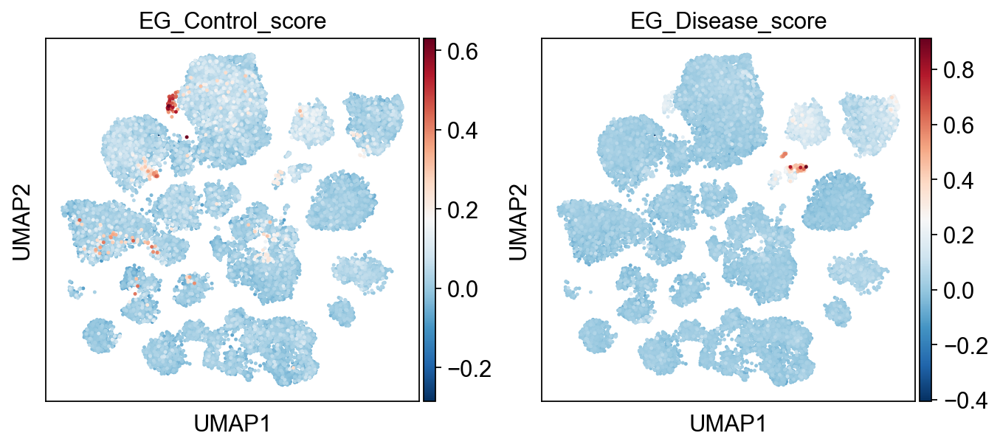
[98]:
sc.pl.umap(
adata,
color=[key+'_nlog10_pval' for key in EG_top_geneset_dict.keys()],
color_map="RdBu_r",
# color_map=piaso.pl.color.c_color4,
vcenter=-np.log10(0.05),
# vmin=-5,
# vmax=5,
s=20,
)
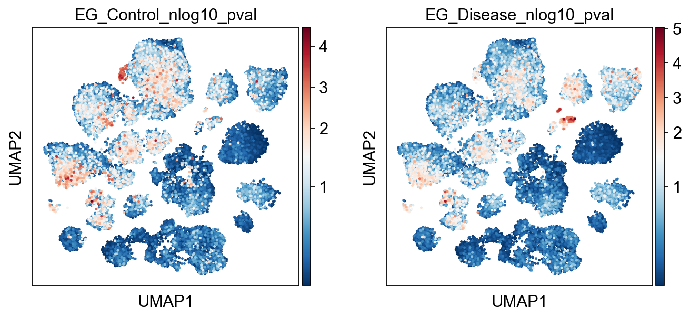
[99]:
sc.pl.umap(
adata,
color=[key+'_nlog10_pval_mc' for key in EG_top_geneset_dict.keys()],
color_map="RdBu_r",
vcenter=-np.log10(0.05),
s=20,
)
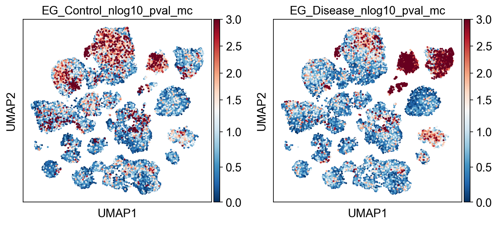
[106]:
sc.pl.umap(
adata,
color=[key+'_nlog10_mc_FDR' for key in EG_top_geneset_dict.keys()],
color_map="RdBu_r",
vcenter=-np.log10(0.05),
s=20,
)
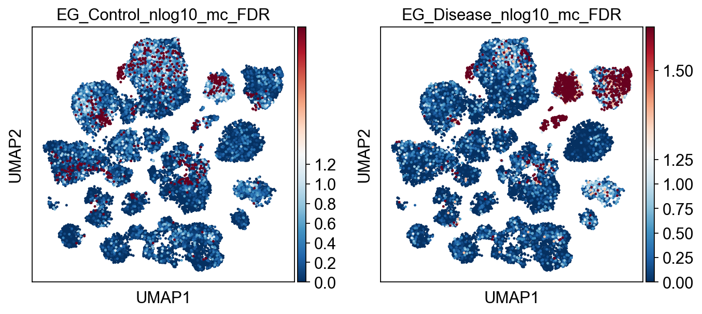
[107]:
sc.pl.umap(
adata,
color=[key+'_nlog10_FDR' for key in EG_top_geneset_dict.keys()],
# color_map="RdBu_r",
color_map=piaso.pl.color.c_color4,
vcenter=-np.log10(0.05),
# vmin=-5,
# vmax=5,
s=20,
)
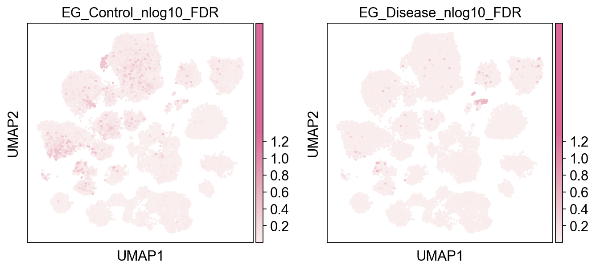
[108]:
piaso.pl.plot_features_violin(adata,
feature_list=[key+'_nlog10_FDR' for key in EG_top_geneset_dict.keys()],
width_single=20,
height_single=3,
groupby='SubclassXCondition',
show_grid=False
)
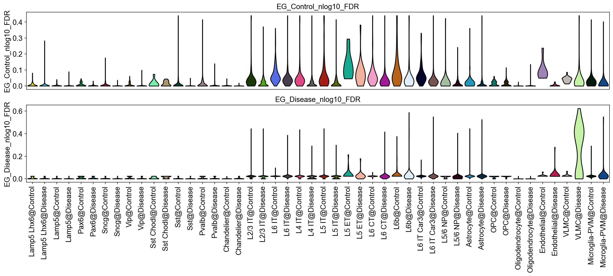
[109]:
for key in EG_top_geneset_dict.keys():
tmp=adata.obs[key+'_nlog10_pval_mc'].copy()
tmp[tmp<= (-np.log10(0.05))]=0
adata.obs[key+'_nlog10_mc_trim']=tmp
[110]:
sc.pl.dotplot(
adata,
var_names=[key+'_nlog10_mc_trim' for key in EG_top_geneset_dict.keys()],
groupby='SubclassXCondition',
swap_axes=True,
cmap=piaso.pl.color.c_color4
)
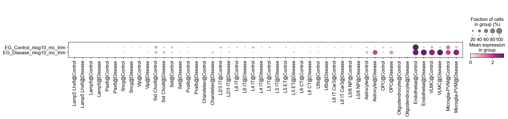
[111]:
for key in EG_top_geneset_dict.keys():
tmp=adata.obs[key+'_nlog10_mc_FDR'].copy()
tmp[tmp<= (-np.log10(0.05))]=0
# tmp[tmp<= (-np.log10(0.1))]=0
adata.obs[key+'_nlog10_mc_FDR_trim']=tmp
[112]:
sc.pl.dotplot(
adata,
var_names=[key+'_nlog10_mc_FDR_trim' for key in EG_top_geneset_dict.keys()],
groupby='SubclassXCondition',
swap_axes=True,
cmap=piaso.pl.color.c_color4
)
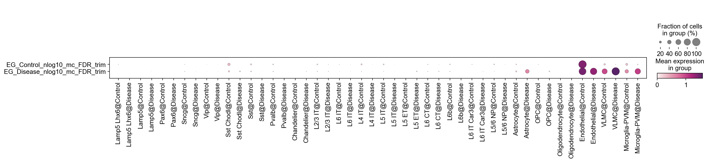
[113]:
for key in EG_top_geneset_dict.keys():
tmp=adata.obs[key+'_nlog10_FDR'].copy()
# tmp[tmp<= (-np.log10(0.05))]=0
tmp[tmp<= (-np.log10(0.1))]=0
adata.obs[key+'_nlog10_FDR_trim']=tmp
[114]:
sc.pl.dotplot(
adata,
var_names=[key+'_nlog10_FDR_trim' for key in EG_top_geneset_dict.keys()],
groupby='SubclassXCondition',
swap_axes=True,
cmap=piaso.pl.color.c_color4
)
/home/mid166/.conda/envs/scda4/lib/python3.9/site-packages/scanpy/plotting/_dotplot.py:697: RuntimeWarning: invalid value encountered in true_divide
frac = (frac - dot_min) / old_range
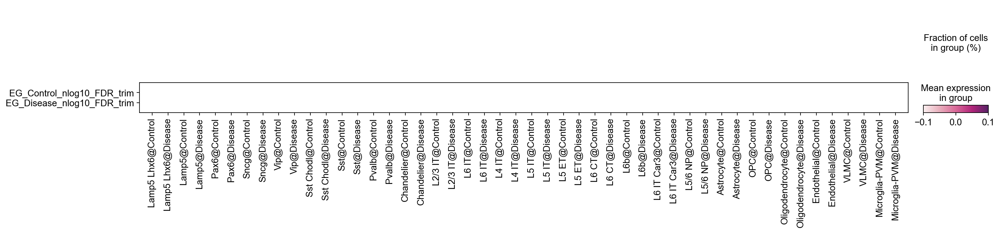
[61]:
EG_top_geneset_df=emergene.convertTopGeneDictToDF(
EG_top_geneset_dict,
gene_list_as_string=True,
)
[62]:
EG_top_geneset_df.head(10)
[62]:
| EG_Control_Gene | EG_Control_EG_score | EG_Disease_Gene | EG_Disease_EG_score | |
|---|---|---|---|---|
| 0 | AC096637.1 | 0.467176 | CD3E | 0.673279 |
| 1 | HSPA6 | 0.430486 | CD8B | 0.623488 |
| 2 | MTRNR2L1 | 0.369348 | CD3G | 0.585773 |
| 3 | SFN | 0.349734 | STC1 | 0.494837 |
| 4 | AC021678.2 | 0.327302 | NAGS | 0.437685 |
| 5 | NPAS4 | 0.312137 | IL32 | 0.430496 |
| 6 | AC115485.1 | 0.305229 | CCL2 | 0.351259 |
| 7 | LINC01850 | 0.289507 | AC245014.3 | 0.333177 |
| 8 | AC068205.1 | 0.286869 | FMOD | 0.327457 |
| 9 | AL009177.1 | 0.279813 | AC110992.1 | 0.326526 |
[49]:
piaso.pl.plot_embeddings_split(
adata,
color='SERPINE1',
layer='log1p',
splitby='Condition',
color_map=piaso.pl.color.c_color1,
size=30,
frameon=False,
# vcenter=-np.log10(0.05),
)
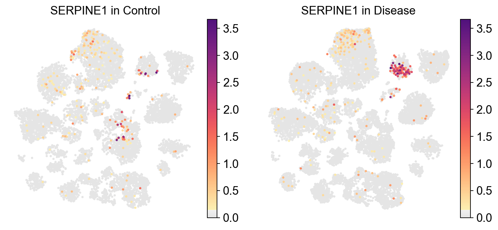
[50]:
piaso.pl.plot_embeddings_split(
adata,
color='SERPINE1',
layer='localFC',
splitby='Condition',
color_map=piaso.pl.color.c_color1,
size=30,
frameon=False,
# vcenter=-np.log10(0.05),
)
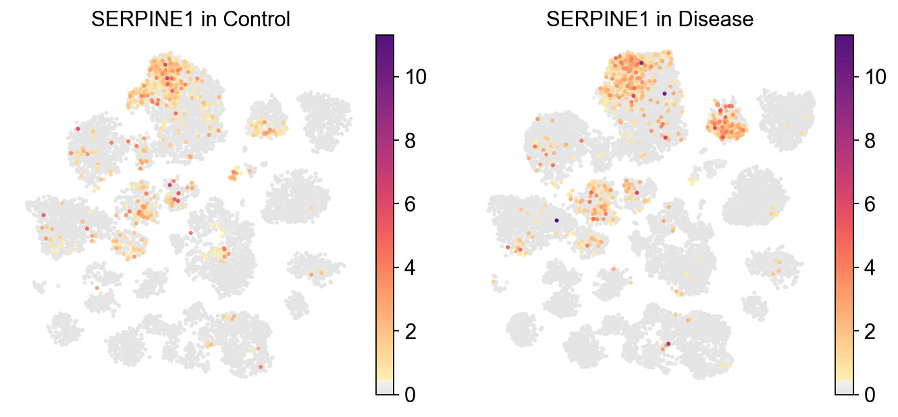
[51]:
piaso.pl.plot_embeddings_split(
adata,
color='NPAS4',
layer='log1p',
splitby='Condition',
color_map=piaso.pl.color.c_color1,
size=30,
frameon=False,
# vcenter=-np.log10(0.05),
)
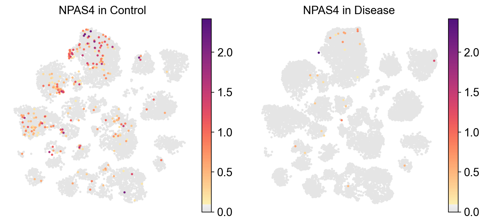
[52]:
sc.pl.umap(
adata,
color=EG_top_geneset_df['EG_Disease_Gene'][20:26],
color_map=piaso.pl.color.c_color1,
# vmin=-5,
# vmax=6,
s=20,
ncols=6,
frameon=False,
)
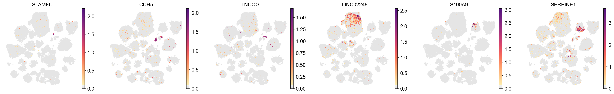